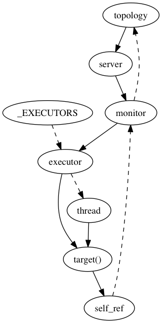

Periodic Executors¶
PyMongo implements a PeriodicExecutor for two
purposes: as the background thread for Monitor, and to
regularly check if there are OP_KILL_CURSORS messages that must be sent to the server.
Killing Cursors¶
An incompletely iterated Cursor on the client represents an
open cursor object on the server. In code like this, we lose a reference to
the cursor before finishing iteration:
for doc in collection.find():
raise Exception()
We try to send an OP_KILL_CURSORS to the server to tell it to clean up the
server-side cursor. But we must not take any locks directly from the cursor’s
destructor (see PYTHON-799), so we cannot safely use the PyMongo data
structures required to send a message. The solution is to add the cursor’s id
to an array on the MongoClient without taking any locks.
Each client has a PeriodicExecutor devoted to
checking the array for cursor ids. Any it sees are the result of cursors that
were freed while the server-side cursor was still open. The executor can safely
take the locks it needs in order to send the OP_KILL_CURSORS message.
Stopping Executors¶
Just as Cursor must not take any locks from its destructor,
neither can MongoClient and Topology.
Thus, although the client calls close() on its kill-cursors thread, and
the topology calls close() on all its monitor threads, the close()
method cannot actually call wake() on the executor, since wake()
takes a lock.
Instead, executors wake periodically to check if self.close is set,
and if so they exit.
A thread can log spurious errors if it wakes late in the Python interpreter’s
shutdown sequence, so we try to join threads before then. Each periodic
executor (either a monitor or a kill-cursors thread) adds a weakref to itself
to a set called _EXECUTORS, in the periodic_executor module.
An exit handler runs on shutdown and tells all executors to stop, then tries (with a short timeout) to join all executor threads.
Monitoring¶
For each server in the topology, Topology uses a periodic
executor to launch a monitor thread. This thread must not prevent the topology
from being freed, so it weakrefs the topology. Furthermore, it uses a weakref
callback to terminate itself soon after the topology is freed.
Solid lines represent strong references, dashed lines weak ones:
See Stopping Executors above for an explanation of the _EXECUTORS set.
It is a requirement of the Server Discovery And Monitoring Spec that a sleeping monitor can be awakened early. Aside from infrequent wakeups to do their appointed chores, and occasional interruptions, periodic executors also wake periodically to check if they should terminate.
Our first implementation of this idea was the obvious one: use the Python standard library’s threading.Condition.wait with a timeout. Another thread wakes the executor early by signaling the condition variable.
A topology cannot signal the condition variable to tell the executor to terminate, because it would risk a deadlock in the garbage collector: no destructor or weakref callback can take a lock to signal the condition variable (see PYTHON-863); thus the only way for a dying object to terminate a periodic executor is to set its “stopped” flag and let the executor see the flag next time it wakes.
We erred on the side of prompt cleanup, and set the check interval at 100ms. We assumed that checking a flag and going back to sleep 10 times a second was cheap on modern machines.
Starting in Python 3.2, the builtin C implementation of lock.acquire takes a timeout parameter, so Python 3.2+ Condition variables sleep simply by calling lock.acquire; they are implemented as efficiently as expected.
But in Python 2, lock.acquire has no timeout. To wait with a timeout, a Python 2 condition variable sleeps a millisecond, tries to acquire the lock, sleeps twice as long, and tries again. This exponential backoff reaches a maximum sleep time of 50ms.
If PyMongo calls the condition variable’s “wait” method with a short timeout, the exponential backoff is restarted frequently. Overall, the condition variable is not waking a few times a second, but hundreds of times. (See PYTHON-983.)
Thus the current design of periodic executors is surprisingly simple: they do a simple time.sleep for a half-second, check if it is time to wake or terminate, and sleep again.